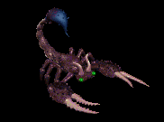
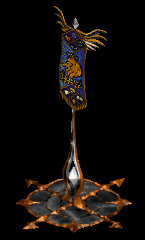
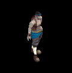
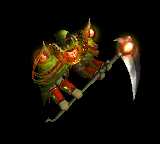
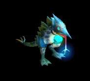
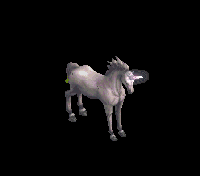
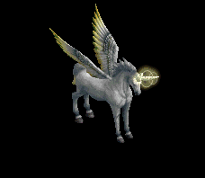
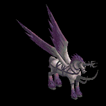

銃 をドロップするmob一覧
一覧ページへ
| 両刀骸骨戦士 | アンデット | 一般1 | ||||||||
|---|---|---|---|---|---|---|---|---|---|---|
 | 片手剣(410) | 弓(270) | 矢(410) | 兜・帽子(230) | 槍投擲機(210) | 帰還(160) | クロー(410) | 銃(270) | 魔弾(410) | |
| 骸骨剣士 | アンデット | 一般3 | ||||||||
 | 片手剣(360) | 弓(240) | 矢(360) | 兜・帽子(200) | 槍投擲機(180) | 帰還(140) | クロー(360) | 銃(240) | 魔弾(360) | |
| 地獄の双剣 | アンデット | ボス1 | ||||||||
 | 片手剣(470) | 弓(310) | 鍵(50) | 兜・帽子(260) | 槍投擲機(240) | 帰還(190) | クロー(470) | 銃(310) | ||
| リビングメイル | アンデット | 一般2 | ||||||||
 | 弓(380) | 片手剣(250) | 盾(380) | 鎧(210) | 手首(190) | 能力向上1(150) | クロー(250) | 銃(380) | ||
| 鎧霊 | アンデット | 一般3 | ||||||||
 | 弓(360) | 片手剣(240) | 弾(360) | 鎧(200) | 首(180) | 能力向上1(140) | クロー(240) | 銃(360) | ||
| 幽霊鎧 | アンデット | 一般4 | ||||||||
 | 弓(300) | 両手剣(200) | 盾(300) | 鎧(170) | 手首(150) | 能力向上1(120) | 鎌(200) | 銃(300) | ||
| 守護鎧 | アンデット | セミ1 | ||||||||
 | 弓(390) | 片手剣(260) | 盾(390) | 鎧(220) | 首(200) | 能力向上1(160) | クロー(260) | 銃(390) | ||
| 幻想鎧 | アンデット | ボス1 | ||||||||
 | 弓(470) | 両手剣(310) | 盾(470) | 鎧(260) | 手首(240) | 能力向上2(190) | 鎌(310) | 銃(470) | ||
| ハンター | 人間 | 一般1 | ||||||||
 | 弓(410) | 片手剣(270) | 矢(410) | グローブ(230) | 手首(210) | 腕刺青(150) | クロー(270) | 銃(410) | 魔弾(410) | |
| アーチャー | 人間 | 一般2 | ||||||||
 | 弓(380) | 片手剣(250) | 矢(380) | グローブ(210) | 手首(190) | 腕刺青(160) | クロー(250) | 銃(380) | 魔弾(380) | |
| シューター | 人間 | 一般3 | ||||||||
 | 弓(360) | 片手剣(240) | 矢(360) | グローブ(200) | 手首(180) | 腕刺青(170) | クロー(240) | 銃(360) | 魔弾(360) | |
| スナイパー | 人間 | セミ1 | ||||||||
 | 弓(390) | 片手剣(260) | 矢(390) | グローブ(220) | 手首(200) | 腕刺青(180) | クロー(260) | 銃(390) | 魔弾(390) | |
| ブラックエルフ | 人間 | ボス1 | ||||||||
 | 弓(470) | 片手剣(310) | イベント(470) | グローブ(260) | 手首(240) | 腕刺青(190) | クロー(310) | 銃(470) | ||
| エルフ戦士 | 人間 | 一般3 | ||||||||
 | 片手剣(360) | 弓(240) | 矢(360) | 鎧(200) | 指輪(180) | 腕刺青(120) | クロー(360) | 銃(240) | 魔弾(360) | |
| エルフ巡察者 | 人間 | セミ1 | ||||||||
 | 片手剣(390) | 弓(260) | 矢(390) | 兜・帽子(220) | 指輪(200) | 腕刺青(140) | クロー(390) | 銃(260) | 魔弾(390) | |
| エルフ王 | 人間 | ボス3 | ||||||||
 | 片手剣(510) | 弓(340) | 矢(510) | 鎧(280) | 指輪(260) | 腕刺青(160) | クロー(510) | 銃(340) | 魔弾(510) | |
| 鷲闘士 | 悪魔 | 一般2 | ||||||||
 | 片手剣(380) | 弓(250) | 盾(380) | グローブ(210) | 手首(190) | 腕刺青(120) | クロー(380) | 銃(250) | ||
| 鷲狂戦士 | 悪魔 | 一般3 | ||||||||
 | 片手剣(360) | 弓(240) | 矢(360) | グローブ(200) | 手首(180) | 腕刺青(130) | クロー(360) | 銃(240) | 魔弾(360) | |
| 鷲王 | 悪魔 | ボス1 | ||||||||
 | 片手剣(470) | 弓(310) | 盾(470) | グローブ(260) | 手首(240) | 腕刺青(150) | クロー(470) | 銃(310) | ||
| リザードトルーパ | 悪魔 | 一般4 | ||||||||
 | ステッキ(300) | 弓(200) | 矢(300) | 職業鎧(170) | 首(150) | 能力向上2(120) | 銃(200) | 魔弾(300) | ||
| ナーガナイト | 悪魔 | セミ2 | ||||||||
 | ステッキ(420) | 弓(280) | HP回復(420) | 職業鎧(230) | 首(210) | 能力向上2(170) | 銃(280) | |||
| ナーガランサー | 悪魔 | ボス2 | ||||||||
 | スリング(490) | 弓(330) | 矢(490) | 職業鎧(270) | 首(250) | 能力向上2(200) | 銃(330) | 魔弾(490) | ||
| オーガオフィサー | 悪魔 | セミ3 | ||||||||
 | ステッキ(450) | 弓(300) | HP回復(450) | 鎧(250) | イヤリング(230) | 能力向上1(180) | 銃(300) | |||
| ストーンオブザー | 悪魔 | セミ2 | ||||||||
 | none(420) | 弓(280) | 矢(420) | 足(230) | 冠(210) | 特殊1(170) | 銃(280) | 魔弾(420) | ||
| スコーピオン | 動物 | 一般1 | ||||||||
 | 弓(410) | 槍(270) | 盾(410) | 兜・帽子(230) | イヤリング(210) | 特殊1(160) | 箒(270) | 銃(410) | ||
| ポイズンテール | 動物 | 一般2 | ||||||||
 | 弓(380) | 槍(250) | 矢(380) | 兜・帽子(210) | 手首(190) | 特殊1(150) | 箒(250) | 銃(380) | 魔弾(380) | |
| デスピンサー | 動物 | 一般3 | ||||||||
|  | 弓(360) | 槍(240) | 盾(360) | 兜・帽子(200) | イヤリング(180) | 特殊1(140) | 箒(240) | 銃(360) | ||
| 食人スコーピオン | 動物 | セミ2 | ||||||||
 | 弓(420) | 槍(280) | 矢(420) | 兜・帽子(230) | イヤリング(210) | 特殊1(170) | 箒(280) | 銃(420) | 魔弾(420) | |
| スノースコルピオ | 動物 | ボス2 | ||||||||
 | 弓(490) | 槍(330) | 盾(490) | 兜・帽子(270) | 手首(250) | 特殊1(200) | 箒(330) | 銃(490) | ||
| ウルフ | 動物 | 一般3 | ||||||||
 | 牙(360) | 弓(240) | 状態異常回復1(360) | マント(200) | 槍投擲機(180) | 特殊1(140) | 双剣(360) | 銃(240) | ||
| ディガー | 動物 | セミ1 | ||||||||
 | 弓(390) | スリング(260) | 弾(390) | 職業鎧(220) | 指輪(200) | 能力向上1(160) | 銃(390) | |||
| トーチリザード | 神獣 | 一般1 | ||||||||
 | 銃(100) | 弓(100) | ステッキ(270) | |||||||
| ファイアドレイク | 神獣 | 一般2 | ||||||||
 | 銃(100) | 弓(100) | ステッキ(250) | |||||||
| サラマンダー | 神獣 | セミ1 | ||||||||
 | 銃(100) | 弓(100) | ステッキ(260) | |||||||
| イフリィト | 神獣 | セミ2 | ||||||||
 | 銃(100) | 弓(100) | ステッキ(280) | |||||||
| スルタン | 神獣 | ボス2 | ||||||||
 | 銃(100) | 弓(100) | ステッキ(330) | |||||||
| リプリートマーキ | 神獣 | 一般4 | ||||||||
 | 銃(200) | 投擲(100) | 弓(200) | |||||||
| ウィルオウィスプ | 神獣 | セミ1 | ||||||||
 | 銃(260) | 投擲(100) | 弓(260) | |||||||
| 両刀骸骨戦士Ex | アンデット | 一般1 | ||||||||
| 片手剣(410) | 弓(270) | 矢(410) | 兜・帽子(230) | 槍投擲機(210) | 帰還(160) | クロー(410) | 銃(270) | 魔弾(410) | |
| 骸骨剣士Ex | アンデット | 一般3 | ||||||||
| 片手剣(360) | 弓(240) | 矢(360) | 兜・帽子(200) | 槍投擲機(180) | 帰還(140) | クロー(360) | 銃(240) | 魔弾(360) | |
| 地獄の双剣Ex | アンデット | ボス1 | ||||||||
| 片手剣(1200) | 弓(800) | 鍵(50) | 兜・帽子(670) | 槍投擲機(600) | 帰還(480) | クロー(1200) | 銃(800) | ||
| リビングメイルEx | アンデット | 一般2 | ||||||||
| 弓(380) | 片手剣(250) | 盾(380) | 鎧(210) | 手首(190) | 能力向上1(150) | クロー(250) | 銃(380) | ||
| 鎧霊Ex | アンデット | 一般3 | ||||||||
| 弓(360) | 片手剣(240) | 弾(360) | 鎧(200) | 首(180) | 能力向上1(140) | クロー(240) | 銃(360) | ||
| 幽霊鎧Ex | アンデット | 一般4 | ||||||||
| 弓(300) | 両手剣(200) | 盾(300) | 鎧(170) | 手首(150) | 能力向上1(120) | 鎌(200) | 銃(300) | ||
| 守護鎧Ex | アンデット | セミ1 | ||||||||
| 弓(450) | 片手剣(300) | 盾(450) | 鎧(250) | 首(230) | 能力向上1(180) | クロー(300) | 銃(450) | ||
| 幻想鎧Ex | アンデット | ボス1 | ||||||||
| 弓(1200) | 両手剣(800) | 盾(1200) | 鎧(670) | 手首(600) | 能力向上2(480) | 鎌(800) | 銃(1200) | ||
| ハンターEx | 人間 | 一般1 | ||||||||
| 弓(410) | 片手剣(270) | 矢(410) | グローブ(230) | 手首(210) | 腕刺青(150) | クロー(270) | 銃(410) | 魔弾(410) | |
| アーチャーEx | 人間 | 一般2 | ||||||||
| 弓(380) | 片手剣(250) | 矢(380) | グローブ(210) | 手首(190) | 腕刺青(160) | クロー(250) | 銃(380) | 魔弾(380) | |
| アーチャーEx | 人間 | 一般3 | ||||||||
| 弓(360) | 片手剣(240) | 矢(360) | グローブ(200) | 手首(180) | 腕刺青(170) | クロー(240) | 銃(360) | 魔弾(360) | |
| スナイパーEx | 人間 | セミ1 | ||||||||
| 弓(450) | 片手剣(300) | 矢(450) | グローブ(250) | 手首(230) | 腕刺青(180) | クロー(300) | 銃(450) | 魔弾(450) | |
| ブラックエルフEx | 人間 | ボス1 | ||||||||
| 弓(1200) | 片手剣(800) | イベント(1200) | グローブ(670) | 手首(600) | 腕刺青(190) | クロー(800) | 銃(1200) | ||
| エルフ戦士Ex | 人間 | 一般3 | ||||||||
| 片手剣(360) | 弓(240) | 矢(360) | 鎧(200) | 指輪(180) | 腕刺青(120) | クロー(360) | 銃(240) | 魔弾(360) | |
| エルフ巡察者Ex | 人間 | セミ1 | ||||||||
| 片手剣(450) | 弓(300) | 矢(450) | 兜・帽子(250) | 指輪(230) | 腕刺青(140) | クロー(450) | 銃(300) | 魔弾(450) | |
| エルフ王Ex | 人間 | ボス3 | ||||||||
| 片手剣(2800) | 弓(1870) | 矢(2800) | 鎧(1560) | 指輪(1400) | 腕刺青(160) | クロー(2800) | 銃(1870) | 魔弾(2800) | |
| 鷲闘士Ex | 悪魔 | 一般2 | ||||||||
| 片手剣(380) | 弓(250) | 盾(380) | グローブ(210) | 手首(190) | 腕刺青(120) | クロー(380) | 銃(250) | ||
| 鷲狂戦士Ex | 悪魔 | 一般3 | ||||||||
| 片手剣(360) | 弓(240) | 矢(360) | グローブ(200) | 手首(180) | 腕刺青(130) | クロー(360) | 銃(240) | 魔弾(360) | |
| 鷲王Ex | 悪魔 | ボス1 | ||||||||
| 片手剣(1200) | 弓(800) | 盾(1200) | グローブ(670) | 手首(600) | 腕刺青(150) | クロー(1200) | 銃(800) | ||
| リザードトルーパEx | 悪魔 | 一般4 | ||||||||
| ステッキ(300) | 弓(200) | 矢(300) | 職業鎧(170) | 首(150) | 能力向上2(120) | 銃(200) | 魔弾(300) | ||
| ナーガナイトEx | 悪魔 | セミ2 | ||||||||
| ステッキ(650) | 弓(430) | HP回復(650) | 職業鎧(360) | 首(330) | 能力向上2(260) | 銃(430) | |||
| ナーガランサーEx | 悪魔 | ボス2 | ||||||||
| スリング(2000) | 弓(1330) | 矢(2000) | 職業鎧(1110) | 首(1000) | 能力向上2(800) | 銃(1330) | 魔弾(2000) | ||
| オーガオフィサーEx | 悪魔 | セミ3 | ||||||||
| ステッキ(800) | 弓(530) | HP回復(800) | 鎧(440) | イヤリング(400) | 能力向上1(320) | 銃(530) | |||
| ストーンオブザーEx | 悪魔 | セミ2 | ||||||||
| none(650) | 弓(430) | 矢(650) | 足(360) | 冠(330) | 特殊1(260) | 銃(430) | 魔弾(650) | ||
| スコーピオンEx | 動物 | 一般1 | ||||||||
| 弓(410) | 槍(270) | 盾(410) | 兜・帽子(230) | イヤリング(210) | 特殊1(160) | 箒(270) | 銃(410) | ||
| ポイズンテールEx | 動物 | 一般2 | ||||||||
| 弓(380) | 槍(250) | 矢(380) | 兜・帽子(210) | 手首(190) | 特殊1(150) | 箒(250) | 銃(380) | 魔弾(380) | |
| デスピンサーEx | 動物 | 一般3 | ||||||||
| 弓(360) | 槍(240) | 盾(360) | 兜・帽子(200) | イヤリング(180) | 特殊1(140) | 箒(240) | 銃(360) | |||
| 食人スコーピオンEx | 動物 | セミ2 | ||||||||
| 弓(650) | 槍(430) | 矢(650) | 兜・帽子(360) | イヤリング(330) | 特殊1(260) | 箒(430) | 銃(650) | 魔弾(650) | |
| スノースコルピオEx | 動物 | ボス2 | ||||||||
| 弓(2000) | 槍(1330) | 盾(2000) | 兜・帽子(1110) | 手首(1000) | 特殊1(800) | 箒(1330) | 銃(2000) | ||
| ウルフEx | 動物 | 一般3 | ||||||||
| 牙(360) | 弓(240) | 状態異常回復1(360) | マント(200) | 槍投擲機(180) | 特殊1(140) | 双剣(360) | 銃(240) | ||
| ディガーEx | 動物 | セミ1 | ||||||||
| 弓(450) | スリング(300) | 弾(450) | 職業鎧(250) | 指輪(230) | 能力向上1(180) | 銃(450) | |||
| トーチリザードEx | 神獣 | 一般1 | ||||||||
| 弓(410) | ステッキ(270) | 矢(410) | 足(230) | 冠(210) | 能力向上2(160) | 銃(410) | 魔弾(410) | ||
| ファイアドレイクEx | 神獣 | 一般2 | ||||||||
| 弓(380) | ステッキ(250) | 矢(380) | 兜・帽子(210) | 冠(190) | 能力向上2(150) | 銃(380) | 魔弾(380) | ||
| サラマンダEx | 神獣 | セミ1 | ||||||||
| 弓(450) | ステッキ(300) | 矢(450) | 足(250) | 冠(230) | 能力向上2(180) | 銃(450) | 魔弾(450) | ||
| イフリィトEx | 神獣 | セミ2 | ||||||||
| 弓(650) | ステッキ(430) | 矢(650) | マント(360) | 首(330) | 能力向上2(260) | 銃(650) | 魔弾(650) | ||
| スルタンEx | 神獣 | ボス2 | ||||||||
| 弓(2000) | ステッキ(1330) | 矢(2000) | 足(1110) | 首(1000) | 能力向上2(800) | 銃(2000) | 魔弾(2000) | ||
| リプリートマーキEx | 神獣 | 一般4 | ||||||||
| 投擲(300) | 弓(200) | 盾(300) | マント(170) | 指輪(150) | 特殊1(120) | 銃(200) | |||
| ウィルオウィスプEx | 神獣 | セミ1 | ||||||||
| 投擲(450) | 弓(300) | 盾(450) | 腰(250) | 指輪(230) | 特殊1(180) | 銃(300) | |||
| 骸骨サンタ | アンデット | ボス3 | ||||||||
 | 弓(1210) | 片手剣(810) | 矢(1210) | グローブ(700) | 手首(610) | 腕刺青(150) | クロー(810) | 銃(1210) | 魔弾(1210) | |
| 両刀骸骨戦士Zin | アンデット | 一般1 | ||||||||
| 片手剣(1210) | 弓(810) | 矢(1210) | 兜・帽子(670) | 槍投擲機(610) | 帰還(480) | クロー(1210) | 銃(810) | 魔弾(1210) | |
| 骸骨剣士Zin | アンデット | 一般3 | ||||||||
| 片手剣(1560) | 弓(1040) | 矢(1560) | 兜・帽子(870) | 槍投擲機(780) | 帰還(620) | クロー(1560) | 銃(1040) | 魔弾(1560) | |
| 地獄の双剣Zin | アンデット | ボス1 | ||||||||
| 片手剣(1000) | 弓(670) | 鍵(40) | 兜・帽子(560) | 槍投擲機(500) | 帰還(400) | クロー(1000) | 銃(670) | ||
| リビングメイルZin | アンデット | 一般2 | ||||||||
| 弓(1380) | 片手剣(920) | 盾(1380) | 鎧(770) | 手首(690) | 能力向上1(550) | クロー(920) | 銃(1380) | ||
| 鎧霊Zin | アンデット | 一般3 | ||||||||
| 弓(1560) | 片手剣(1040) | 弾(1560) | 鎧(870) | 首(780) | 能力向上1(620) | クロー(1040) | 銃(1560) | ||
| 幽霊鎧Zin | アンデット | 一般4 | ||||||||
| 弓(1200) | 両手剣(800) | 盾(1200) | 鎧(670) | 手首(600) | 能力向上1(480) | 鎌(800) | 銃(1200) | ||
| 守護鎧Zin | アンデット | セミ1 | ||||||||
| 弓(650) | 片手剣(430) | 盾(650) | 鎧(360) | 首(330) | 能力向上1(260) | クロー(430) | 銃(650) | ||
| 幻想鎧Zin | アンデット | ボス1 | ||||||||
| 弓(1000) | 両手剣(670) | 盾(1000) | 鎧(560) | 手首(500) | 能力向上2(400) | 鎌(670) | 銃(1000) | ||
| ハンターZin | 人間 | 一般1 | ||||||||
| 弓(1210) | 片手剣(810) | 矢(1210) | グローブ(670) | 手首(610) | 腕刺青(150) | クロー(810) | 銃(1210) | 魔弾(1210) | |
| アーチャーZin | 人間 | 一般2 | ||||||||
| 弓(1380) | 片手剣(920) | 矢(1380) | グローブ(770) | 手首(690) | 腕刺青(160) | クロー(920) | 銃(1380) | 魔弾(1380) | |
| アーチャーZin | 人間 | 一般3 | ||||||||
| 弓(1560) | 片手剣(1040) | 矢(1560) | グローブ(870) | 手首(780) | 腕刺青(170) | クロー(1040) | 銃(1560) | 魔弾(1560) | |
| スナイパーZin | 人間 | セミ1 | ||||||||
| 弓(650) | 片手剣(430) | 矢(650) | グローブ(360) | 手首(330) | 腕刺青(180) | クロー(430) | 銃(650) | 魔弾(650) | |
| ブラックエルフZin | 人間 | ボス1 | ||||||||
| 弓(1000) | 片手剣(670) | イベント(1000) | グローブ(560) | 手首(500) | 腕刺青(190) | クロー(670) | 銃(1000) | ||
| エルフ戦士Zin | 人間 | 一般3 | ||||||||
| 片手剣(1560) | 弓(1040) | 矢(1560) | 鎧(870) | 指輪(780) | 腕刺青(120) | クロー(1560) | 銃(1040) | 魔弾(1560) | |
| エルフ巡察者Zin | 人間 | セミ1 | ||||||||
| 片手剣(650) | 弓(430) | 矢(650) | 兜・帽子(360) | 指輪(330) | 腕刺青(140) | クロー(650) | 銃(430) | 魔弾(650) | |
| エルフ王Zin | 人間 | ボス3 | ||||||||
| 片手剣(1200) | 弓(800) | 矢(1200) | 鎧(670) | 指輪(600) | 腕刺青(160) | クロー(1200) | 銃(800) | 魔弾(1200) | |
| 鷲闘士Zin | 悪魔 | 一般2 | ||||||||
| 片手剣(1380) | 弓(920) | 盾(1380) | グローブ(770) | 手首(690) | 腕刺青(120) | クロー(1380) | 銃(920) | ||
| 鷲狂戦士Zin | 悪魔 | 一般3 | ||||||||
| 片手剣(1560) | 弓(1040) | 矢(1560) | グローブ(870) | 手首(780) | 腕刺青(130) | クロー(1560) | 銃(1040) | 魔弾(1560) | |
| 鷲王Zin | 悪魔 | ボス1 | ||||||||
| 片手剣(1000) | 弓(670) | 盾(1000) | グローブ(560) | 手首(500) | 腕刺青(150) | クロー(1000) | 銃(670) | ||
| リザードトルーパZin | 悪魔 | 一般4 | ||||||||
| ステッキ(1200) | 弓(800) | 矢(1200) | 職業鎧(670) | 首(600) | 能力向上2(480) | 銃(800) | 魔弾(1200) | ||
| ナーガナイトZin | 悪魔 | セミ2 | ||||||||
| ステッキ(750) | 弓(500) | HP回復(750) | 職業鎧(420) | 首(380) | 能力向上2(300) | 銃(500) | |||
| ナーガランサーZin | 悪魔 | ボス2 | ||||||||
| スリング(1100) | 弓(730) | 矢(1100) | 職業鎧(610) | 首(550) | 能力向上2(440) | 銃(730) | 魔弾(1100) | ||
| オーガオフィサーZin | 悪魔 | セミ3 | ||||||||
| ステッキ(900) | 弓(600) | HP回復(900) | 鎧(500) | イヤリング(450) | 能力向上1(360) | 銃(600) | |||
| ストーンオブザーZin | 悪魔 | セミ2 | ||||||||
| none(750) | 弓(500) | 矢(750) | 足(420) | 冠(380) | 特殊1(300) | 銃(500) | 魔弾(750) | ||
| スコーピオンZin | 動物 | 一般1 | ||||||||
| 弓(1210) | 槍(810) | 盾(1210) | 兜・帽子(670) | イヤリング(610) | 特殊1(480) | 箒(810) | 銃(1210) | ||
| ポイズンテールZin | 動物 | 一般2 | ||||||||
| 弓(1380) | 槍(920) | 矢(1380) | 兜・帽子(770) | 手首(690) | 特殊1(550) | 箒(920) | 銃(1380) | 魔弾(1380) | |
| デスピンサーZin | 動物 | 一般3 | ||||||||
| 弓(1560) | 槍(1040) | 盾(1560) | 兜・帽子(870) | イヤリング(780) | 特殊1(620) | 箒(1040) | 銃(1560) | |||
| 食人スコーピオンZin | 動物 | セミ2 | ||||||||
| 弓(750) | 槍(500) | 矢(750) | 兜・帽子(420) | イヤリング(380) | 特殊1(300) | 箒(500) | 銃(750) | 魔弾(750) | |
| スノースコルピオZin | 動物 | ボス2 | ||||||||
| 弓(1100) | 槍(730) | 盾(1100) | 兜・帽子(610) | 手首(550) | 特殊1(440) | 箒(730) | 銃(1100) | ||
| ウルフZin | 動物 | 一般3 | ||||||||
| 牙(1560) | 弓(1040) | 状態異常回復1(1560) | マント(870) | 槍投擲機(780) | 特殊1(620) | 双剣(1560) | 銃(1040) | ||
| ディガーZin | 動物 | セミ1 | ||||||||
| 弓(650) | スリング(430) | 弾(650) | 職業鎧(360) | 指輪(330) | 能力向上1(260) | 銃(650) | |||
| トーチリザードZin | 神獣 | 一般1 | ||||||||
| 弓(1210) | ステッキ(810) | 矢(1210) | 足(670) | 冠(610) | 能力向上2(480) | 銃(1210) | 魔弾(1210) | ||
| ファイアドレイクZin | 神獣 | 一般2 | ||||||||
| 弓(1380) | ステッキ(920) | 矢(1380) | 兜・帽子(770) | 冠(690) | 能力向上2(550) | 銃(1380) | 魔弾(1380) | ||
| サラマンダZin | 神獣 | セミ1 | ||||||||
| 弓(650) | ステッキ(430) | 矢(650) | 足(360) | 冠(330) | 能力向上2(260) | 銃(650) | 魔弾(650) | ||
| イフリィトZin | 神獣 | セミ2 | ||||||||
| 弓(750) | ステッキ(500) | 矢(750) | マント(420) | 首(380) | 能力向上2(300) | 銃(750) | 魔弾(750) | ||
| スルタンZin | 神獣 | ボス2 | ||||||||
| 弓(1100) | ステッキ(730) | 矢(1100) | 足(610) | 首(550) | 能力向上2(440) | 銃(1100) | 魔弾(1100) | ||
| リプリートマーキZin | 神獣 | 一般4 | ||||||||
| 投擲(1200) | 弓(800) | 盾(1200) | マント(670) | 指輪(600) | 特殊1(480) | 銃(800) | |||
| ウィルオウィスプZin | 神獣 | セミ1 | ||||||||
| 投擲(650) | 弓(430) | 盾(650) | 腰(360) | 指輪(330) | 特殊1(260) | 銃(430) | |||
| セイジ | 人間 | ボス3 | ||||||||
 | 弓(1380) | 片手剣(920) | 矢(1380) | グローブ(800) | 手首(690) | 腕刺青(160) | クロー(920) | 銃(1380) | 魔弾(1380) | |
| セイジマスター | 人間 | セミ3 | ||||||||
 | 弓(1560) | 片手剣(1040) | 矢(1560) | グローブ(900) | 手首(780) | 腕刺青(170) | クロー(1040) | 銃(1560) | 魔弾(1560) | |
| ティアメス(上部触手) | 動物 | ボス3 | ||||||||
 | 弓(1560) | 片手剣(1040) | 矢(1560) | グローブ(900) | 手首(780) | 腕刺青(170) | クロー(1040) | 銃(1560) | 魔弾(1560) | |
| ティアメス(本体) | 動物 | ボス3 | ||||||||
 | 弓(1560) | 片手剣(1040) | 矢(1560) | グローブ(900) | 手首(780) | 腕刺青(170) | クロー(1040) | 銃(1560) | 魔弾(1560) | |
| ティアメス(下部触手) | 動物 | ボス3 | ||||||||
 | 弓(1560) | 片手剣(1040) | 矢(1560) | グローブ(900) | 手首(780) | 腕刺青(170) | クロー(1040) | 銃(1560) | 魔弾(1560) | |
 | 弓(1560) | 片手剣(1040) | 矢(1560) | グローブ(900) | 手首(780) | 腕刺青(170) | クロー(1040) | 銃(1560) | 魔弾(1560) | |
| アークデビル | 悪魔 | ボス3 | ||||||||
 | 弓(1560) | 片手剣(1040) | 矢(1560) | グローブ(900) | 手首(780) | 腕刺青(170) | クロー(1040) | 銃(1560) | 魔弾(1560) | |
| ドラコリッチ | アンデット | ボス3 | ||||||||
 | 弓(1560) | 片手剣(1040) | 矢(1560) | グローブ(900) | 手首(780) | 腕刺青(170) | クロー(1040) | 銃(1560) | 魔弾(1560) | |
| ドラコリッチオーブ | アンデット | ボス3 | ||||||||
|  | 弓(1560) | 片手剣(1040) | 矢(1560) | グローブ(900) | 手首(780) | 腕刺青(170) | クロー(1040) | 銃(1560) | 魔弾(1560) | |
| ならず者 Zin | 人間 | 一般3 | ||||||||
 | 両手剣(70) | 爪(200) | 腕刺青(130) | 笛(100) | 弓(30) | HP回復(40) | 鎌(70) | 銃(30) | ||
| ならず者2 Zin | 人間 | セミ1 | ||||||||
|  | 投擲(90) | 職業鎧(260) | 牙(180) | 能力向上1(140) | 弓(40) | 盾(50) | 双剣(180) | 銃(40) | ||
| ならず者4 Zin | 人間 | ボス1 | ||||||||
 | 投擲(250) | 爪(750) | 牙(500) | 笛(400) | 弓(100) | 盾(150) | 双剣(500) | 銃(100) | ||
| 襲撃団 Zin | 人間 | 一般4 | ||||||||
 | 鍵(50) | 爪(150) | 牙(100) | 笛(80) | 弓(20) | HP回復(30) | 双剣(100) | 銃(20) | ||
| 襲撃団1 Zin | 人間 | セミ1 | ||||||||
 | 投擲(90) | 爪(260) | 牙(180) | 能力向上2(140) | 弓(40) | 盾(50) | 双剣(180) | 銃(40) | ||
| 襲撃団2 Zin | 人間 | セミ3 | ||||||||
 | 鍵(180) | ブローチ(530) | 腕刺青(350) | 笛(280) | 弓(70) | 盾(110) | 銃(70) | |||
| ストリート戦士 Zin | 人間 | セミ2 | ||||||||
 | 能力向上2(140) | マント(410) | 帰還(280) | 笛(220) | 弓(60) | 盾(80) | 銃(60) | |||
| 仙人 Zin | 人間 | ボス3 | ||||||||
 | 投擲(600) | 職業鎧(1800) | 宝石(1200) | 笛(960) | 弓(240) | 盾(360) | 銃(240) | |||
| 古代悪魔 Zin | 悪魔 | 一般4 | ||||||||
 | 指輪(130) | ブローチ(160) | 両手剣(70) | 十字架(40) | 弓(20) | 宝石(10) | 鎌(70) | 銃(20) | ||
| 古代悪魔3 Zin | 悪魔 | ボス2 | ||||||||
 | 宝石(1170) | 首(1440) | 両手剣(590) | 能力向上1(360) | 弓(180) | グローブ(90) | 鎌(590) | 銃(180) | ||
| 死神 Zin | 悪魔 | 一般4 | ||||||||
 | 指輪(130) | 首(160) | 両手剣(70) | 手首(40) | 弓(20) | グローブ(10) | 鎌(70) | 銃(20) | ||
| 死神2 Zin | 悪魔 | セミ3 | ||||||||
|  | 鍵(460) | 首(560) | cP回復(230) | 手首(140) | 弓(70) | イベント(40) | 銃(70) | |||
| 死神4 Zin | 悪魔 | ボス3 | ||||||||
 | 指輪(1560) | 首(1920) | 帰還(790) | 手首(480) | 弓(240) | HP回復(120) | 銃(240) | |||
| 邪臣2 Zin | 悪魔 | セミ3 | ||||||||
 | 鍵(460) | ブローチ(560) | 両手剣(230) | 十字架(140) | 弓(70) | グローブ(40) | 鎌(230) | 銃(70) | ||
| 邪臣4 Zin | 悪魔 | ボス3 | ||||||||
 | 鍵(1560) | 首(1920) | 両手剣(790) | 手首(480) | 弓(240) | グローブ(120) | 鎌(790) | 銃(240) | ||
| カメレオン Zin | 動物 | 一般3 | ||||||||
 | 冠(90) | 鈍器(70) | スリング(50) | 能力向上1(40) | 弓(30) | HP回復(10) | 銃(30) | |||
| カメレオン1 Zin | 動物 | セミ1 | ||||||||
 | 能力向上2(120) | 状態異常回復2(90) | スリング(70) | 鞭(50) | 弓(40) | 盾(20) | 銃(40) | |||
| カメレオン3 Zin | 動物 | ボス2 | ||||||||
 | 宝石(630) | 宝石(450) | スリング(360) | 鞭(270) | 弓(180) | 盾(90) | 銃(180) | |||
| カメレオン4 Zin | 動物 | ボス3 | ||||||||
 | 冠(840) | 鈍器(600) | 腕刺青(480) | 能力向上1(360) | 弓(240) | イベント(120) | 銃(240) | |||
| ラジエータカメ Zin | 動物 | 一般4 | ||||||||
 | 冠(70) | 状態異常回復2(50) | 帰還(40) | 鞭(30) | 弓(20) | 杖(10) | 本(10) | 銃(20) | ||
| ラジエータカメ1 Zin | 動物 | セミ2 | ||||||||
 | 冠(190) | 鈍器(140) | スリング(110) | 十字架(80) | 弓(60) | 盾(30) | 銃(60) | |||
| ラジエータカメ2 Zin | 動物 | ボス1 | ||||||||
 | 鍵(350) | 鈍器(250) | cP回復(200) | 鞭(150) | 弓(100) | 盾(50) | 銃(100) | |||
| ラジエータカメ4 Zin | 動物 | ボス3 | ||||||||
 | 杖(840) | 鈍器(600) | 弾(480) | 十字架(360) | 弓(240) | 盾(120) | 本(840) | 銃(240) | ||
| 装甲亀 Zin | 動物 | セミ1 | ||||||||
 | 冠(120) | 状態異常回復2(90) | スリング(70) | 鞭(50) | 弓(40) | 盾(20) | 銃(40) | |||
| 装甲亀1 Zin | 動物 | セミ2 | ||||||||
 | 冠(190) | 鈍器(140) | cP回復(110) | 鞭(80) | 弓(60) | 盾(30) | 銃(60) | |||
| 装甲亀2 Zin | 動物 | セミ3 | ||||||||
|  | 能力向上2(250) | ブローチ(180) | 帰還(140) | 能力向上1(110) | 弓(70) | イベント(40) | 銃(70) | |||
| 装甲亀3 Zin | 動物 | ボス1 | ||||||||
 | 冠(350) | 鈍器(250) | スリング(200) | 鞭(150) | 弓(100) | 盾(50) | 銃(100) | |||
| ユニコーン Zin | 神獣 | 一般4 | ||||||||
 | 冠(90) | マント(130) | 牙(70) | 槍(10) | 弓(20) | 翼(50) | 箒(10) | 双剣(70) | 水晶(50) | 銃(20) |
| ユニコーン2 Zin | 神獣 | ボス1 | ||||||||
 | 能力向上2(450) | ブローチ(650) | 能力向上2(350) | 槍(50) | 弓(100) | 翼(250) | 箒(50) | 水晶(250) | 銃(100) | |
| ユニコーン4 Zin | 神獣 | ボス3 | ||||||||
|  | 冠(1080) | マント(1560) | 宝石(840) | 鞭(120) | 弓(240) | 翼(600) | 水晶(600) | 銃(240) | ||
| ペガサス Zin | 神獣 | 一般4 | ||||||||
 | 冠(90) | マント(130) | 帰還(70) | 鞭(10) | 弓(20) | HP回復(50) | 銃(20) | |||
| ペガサス2 Zin | 神獣 | セミ3 | ||||||||
|  | 冠(320) | マント(460) | 宝石(250) | 能力向上1(40) | 弓(70) | 翼(180) | 水晶(180) | 銃(70) | ||
| ペガサス4 Zin | 神獣 | ボス3 | ||||||||
 | 冠(1080) | マント(1560) | 牙(840) | 槍(120) | 弓(240) | cP回復(600) | 箒(120) | 双剣(840) | 銃(240) | |
| ブルーウイング Zin | 神獣 | セミ1 | ||||||||
 | 冠(160) | マント(230) | 帰還(120) | 能力向上1(20) | 弓(40) | 翼(90) | 水晶(90) | 銃(40) | ||
| ブルーウイング2 Zin | 神獣 | ボス1 | ||||||||
 | 冠(450) | マント(650) | 牙(350) | 槍(50) | 弓(100) | HP回復(250) | 箒(50) | 双剣(350) | 銃(100) | |
| ブルーウイング3 Zin | 神獣 | ボス2 | ||||||||
 | 冠(810) | ブローチ(1170) | 牙(630) | 槍(90) | 弓(180) | 翼(450) | 箒(90) | 双剣(630) | 水晶(450) | 銃(180) |
| ブルーウイング4 Zin | 神獣 | ボス3 | ||||||||
|  | 能力向上2(1080) | マント(1560) | 牙(840) | 十字架(120) | 弓(240) | イベント(600) | 双剣(840) | 銃(240) | ||
| 呪われた悪霊 | 神獣 | 一般4 | ||||||||
| 銃(200) | 投擲(100) | 弓(200) | |||||||
| 呪われた悪霊 Ex | 神獣 | 一般4 | ||||||||
| 投擲(300) | 弓(200) | 盾(300) | マント(170) | 指輪(150) | 特殊1(120) | 銃(200) | |||
| スコルピオ | 動物 | 一般1 | ||||||||
| 弓(410) | 槍(270) | 盾(410) | 兜・帽子(230) | イヤリング(210) | 特殊1(160) | 箒(270) | 銃(410) | ||
| 毒サソリ | 動物 | 一般2 | ||||||||
| 弓(380) | 槍(250) | 矢(380) | 兜・帽子(210) | 手首(190) | 特殊1(150) | 箒(250) | 銃(380) | 魔弾(380) | |
| 鋏サソリ | 動物 | 一般3 | ||||||||
| 弓(360) | 槍(240) | 盾(360) | 兜・帽子(200) | イヤリング(180) | 特殊1(140) | 箒(240) | 銃(360) | |||
| スコルピオハンタ | 動物 | セミ2 | ||||||||
| 弓(420) | 槍(280) | 矢(420) | 兜・帽子(230) | イヤリング(210) | 特殊1(170) | 箒(280) | 銃(420) | 魔弾(420) | |
| スノースコルピオ | 動物 | ボス2 | ||||||||
| 弓(490) | 槍(330) | 盾(490) | 兜・帽子(270) | 手首(250) | 特殊1(200) | 箒(330) | 銃(490) | ||
| スコルピオ Ex | 動物 | 一般1 | ||||||||
| 弓(410) | 槍(270) | 盾(410) | 兜・帽子(230) | イヤリング(210) | 特殊1(160) | 箒(270) | 銃(410) | ||
| 毒サソリ Ex | 動物 | 一般2 | ||||||||
| 弓(380) | 槍(250) | 矢(380) | 兜・帽子(210) | 手首(190) | 特殊1(150) | 箒(250) | 銃(380) | 魔弾(380) | |
| 鋏サソリ Ex | 動物 | 一般3 | ||||||||
| 弓(360) | 槍(240) | 盾(360) | 兜・帽子(200) | イヤリング(180) | 特殊1(140) | 箒(240) | 銃(360) | |||
| スコルピオハンタ Ex | 動物 | セミ2 | ||||||||
| 弓(650) | 槍(430) | 矢(650) | 兜・帽子(360) | イヤリング(330) | 特殊1(260) | 箒(430) | 銃(650) | 魔弾(650) | |
| スノースコルピオ Ex | 動物 | ボス2 | ||||||||
| 弓(2000) | 槍(1330) | 盾(2000) | 兜・帽子(1110) | 手首(1000) | 特殊1(800) | 箒(1330) | 銃(2000) | ||
| さすらう傭兵 Zin | 人間 | 一般4 | ||||||||
| 両手剣(70) | 爪(200) | 腕刺青(130) | 笛(100) | 弓(30) | HP回復(40) | 鎌(70) | 銃(30) | ||
| 引導者 Zin | 悪魔 | 一般4 | ||||||||
| 指輪(130) | 首(160) | 両手剣(70) | 手首(40) | 弓(20) | グローブ(10) | 鎌(70) | 銃(20) | ||
| カラフルトカゲ Zin | 動物 | 一般4 | ||||||||
| 冠(90) | 鈍器(70) | スリング(50) | 能力向上1(40) | 弓(30) | HP回復(10) | 銃(30) | |||
| ユニコーン Zin | 神獣 | 一般4 | ||||||||
| 冠(90) | マント(130) | 牙(70) | 槍(10) | 弓(20) | 翼(50) | 箒(10) | 双剣(70) | 水晶(50) | 銃(20) |
| ハゲワシ闘士 Zin | 悪魔 | セミ1 | ||||||||
| 片手剣(1380) | 弓(920) | 盾(1380) | グローブ(770) | 手首(690) | 腕刺青(120) | クロー(1380) | 銃(920) | ||
| イーグル狂戦士 Zin | 悪魔 | セミ1 | ||||||||
| 片手剣(1560) | 弓(1040) | 矢(1560) | グローブ(870) | 手首(780) | 腕刺青(130) | クロー(1560) | 銃(1040) | 魔弾(1560) | |
| ハゲワシ勇者 Zin | 悪魔 | ボス1 | ||||||||
| 片手剣(1000) | 弓(670) | 盾(1000) | グローブ(560) | 手首(500) | 腕刺青(150) | クロー(1000) | 銃(670) | ||
| 戦慄のサソリ Zin | 動物 | ボス2 | ||||||||
| 弓(1100) | 槍(730) | 盾(1100) | 兜・帽子(610) | 手首(550) | 特殊1(440) | 箒(730) | 銃(1100) | ||
| ダークアーチャー Zin | 人間 | ボス1 | ||||||||
| 弓(1000) | 片手剣(670) | イベント(1000) | グローブ(560) | 手首(500) | 腕刺青(190) | クロー(670) | 銃(1000) | ||
| さすらう傭兵 Zin | 人間 | 一般4 | ||||||||
| 両手剣(70) | 爪(200) | 腕刺青(130) | 笛(100) | 弓(30) | HP回復(40) | 鎌(70) | 銃(30) | ||
| カラフルトカゲ Zin | 動物 | 一般4 | ||||||||
| 冠(90) | 鈍器(70) | スリング(50) | 能力向上1(40) | 弓(30) | HP回復(10) | 銃(30) | |||
| ユニコーン Zin | 神獣 | 一般4 | ||||||||
| 冠(90) | マント(130) | 牙(70) | 槍(10) | 弓(20) | 翼(50) | 箒(10) | 双剣(70) | 水晶(50) | 銃(20) |
| 鎧霊Ev | アンデット | 一般3 | ||||||||
| 弓(1560) | 片手剣(1040) | 弾(1560) | 鎧(870) | 首(780) | 能力向上1(620) | クロー(1040) | 銃(1560) | ||
| デスピンサーEv | 動物 | 一般3 | ||||||||
| 弓(1560) | 槍(1040) | 盾(1560) | 兜・帽子(870) | イヤリング(780) | 特殊1(620) | 箒(1040) | 銃(1560) | |||
| 鷲狂戦士Ev | 悪魔 | 一般3 | ||||||||
| 片手剣(1560) | 弓(1040) | 矢(1560) | グローブ(870) | 手首(780) | 腕刺青(130) | クロー(1560) | 銃(1040) | 魔弾(1560) | |
| 骸骨剣士Ev | アンデット | 一般3 | ||||||||
| 片手剣(1560) | 弓(1040) | 矢(1560) | 兜・帽子(870) | 槍投擲機(780) | 帰還(620) | クロー(1560) | 銃(1040) | 魔弾(1560) | |
| シューターEv | 人間 | 一般3 | ||||||||
| 弓(1560) | 片手剣(1040) | 矢(1560) | グローブ(870) | 手首(780) | 腕刺青(170) | クロー(1040) | 銃(1560) | 魔弾(1560) | |
| ウルフEv | 動物 | 一般3 | ||||||||
| 牙(1560) | 弓(1040) | 状態異常回復1(1560) | マント(870) | 槍投擲機(780) | 特殊1(620) | 双剣(1560) | 銃(1040) | ||
| エルフ戦士Ev | 人間 | 一般3 | ||||||||
| 片手剣(1560) | 弓(1040) | 矢(1560) | 鎧(870) | 指輪(780) | 腕刺青(120) | クロー(1560) | 銃(1040) | 魔弾(1560) | |
| リザードトルーパEv | 悪魔 | 一般4 | ||||||||
| ステッキ(1200) | 弓(800) | 矢(1200) | 職業鎧(670) | 首(600) | 能力向上2(480) | 銃(800) | 魔弾(1200) | ||
| 幽霊鎧Ev | アンデット | 一般4 | ||||||||
| 弓(1200) | 両手剣(800) | 盾(1200) | 鎧(670) | 手首(600) | 能力向上1(480) | 鎌(800) | 銃(1200) | ||
| スノースコルピオEv | 動物 | ボス2 | ||||||||
| 弓(1100) | 槍(730) | 盾(1100) | 兜・帽子(610) | 手首(550) | 特殊1(440) | 箒(730) | 銃(1100) | ||
| 両刀骸骨戦士Sp | アンデット | 一般4 | ||||||||
 | 片手剣(1200) | 弓(800) | 矢(1200) | 兜・帽子(700) | 槍投擲機(600) | 帰還(500) | クロー(1200) | 銃(800) | 魔弾(1200) | |
| 古代悪魔Sp | 悪魔 | セミ1 | ||||||||
 | 指輪(1500) | ブローチ(700) | 職業鎧(1000) | 十字架(100) | 弓(300) | 冠(1000) | 本(700) | 銃(300) | ||
| ブルーウイングSp | 神獣 | セミ1 | ||||||||
| 冠(1000) | マント(600) | 帰還(400) | 能力向上1(500) | 弓(600) | 翼(800) | 水晶(800) | 銃(600) | ||
| ペガサスSp | 神獣 | セミ1 | ||||||||
| 冠(1080) | マント(1500) | 牙(900) | 槍(120) | 弓(300) | cP回復(600) | 箒(120) | 双剣(900) | 銃(300) | |
| カラフルトカゲ Sp | 動物 | 一般4 | ||||||||
| 冠(90) | 鈍器(70) | スリング(50) | 能力向上1(40) | 弓(30) | HP回復(10) | 銃(30) | |||
| カメレオン Sp | 動物 | 一般4 | ||||||||
| 冠(90) | 鈍器(70) | スリング(50) | 能力向上1(40) | 弓(30) | HP回復(10) | 銃(30) | |||
| さすらう傭兵 Zin[2] | 人間 | 一般4 | ||||||||
 | 両手剣(70) | 爪(200) | 腕刺青(130) | 笛(100) | 弓(30) | HP回復(40) | 鎌(70) | 銃(30) |